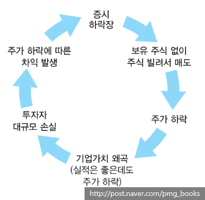

특정 종목의 주가가 하락할 것으로 예상되면 해당 주식을 보유하고 있지 않은 상태에서 주식을 빌려 매도 주문을 내는 투자 전략이다.
주로 초단기 매매차익을 노리는 데 사용되는 기법이다. 향후 주가가 떨어지면 해당 주식을 싼 값에 사 결제일 안에 주식대여자(보유자)에게 돌려주는 방법으로 시세차익을 챙긴다.
공매도는 주식시장에 유동성을 공급하는 반면 시장 질서를 교란시키고 불공정거래 수단으로 악용되기도 한다.
<쉽게 생각하면 어떠한 기관이 한 종목을 찾은 다음 그 종목의 주식을 빌려
매도 한다음 주가가 많이 하락한다. 이때 여기서 발생하는 시세차익을 챙기는 것이다.
